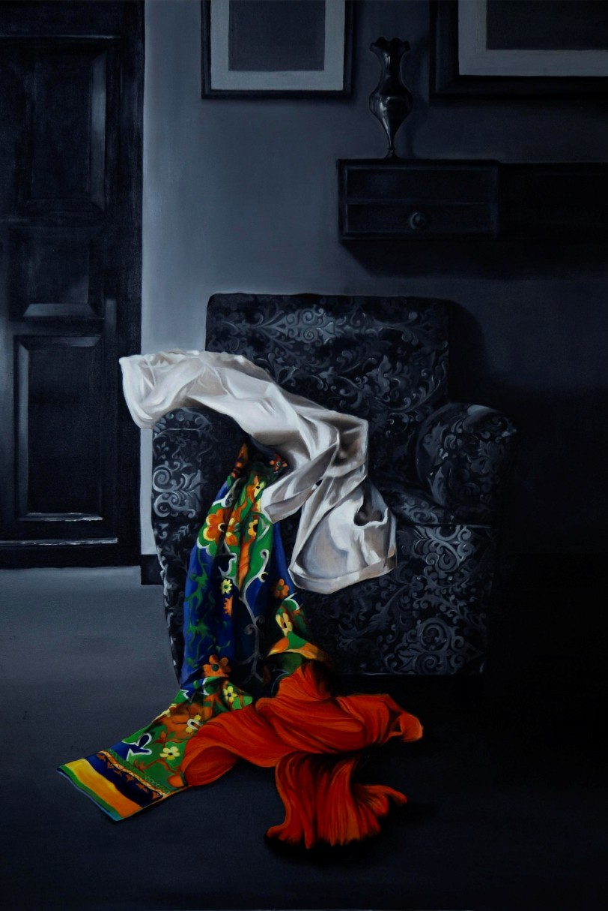
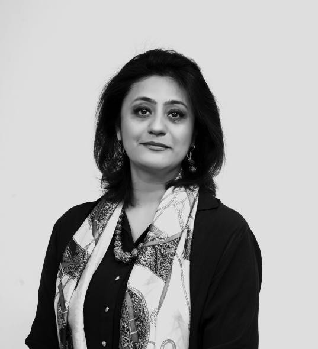
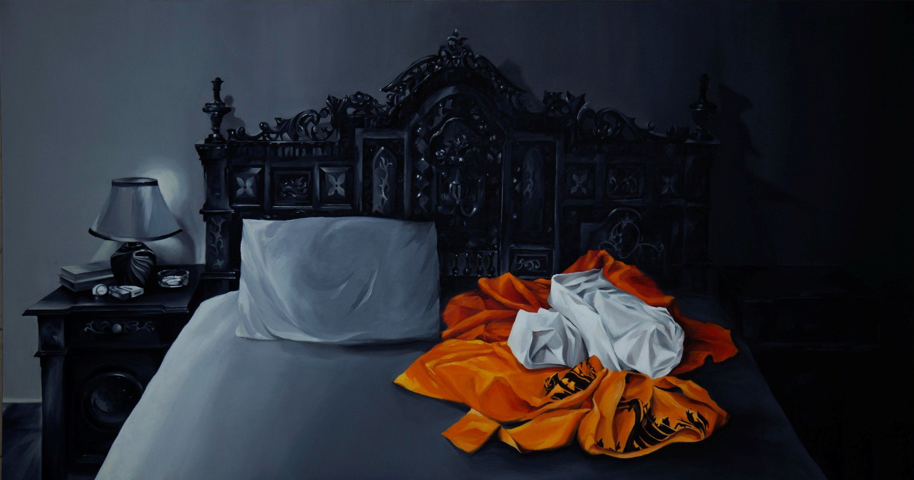
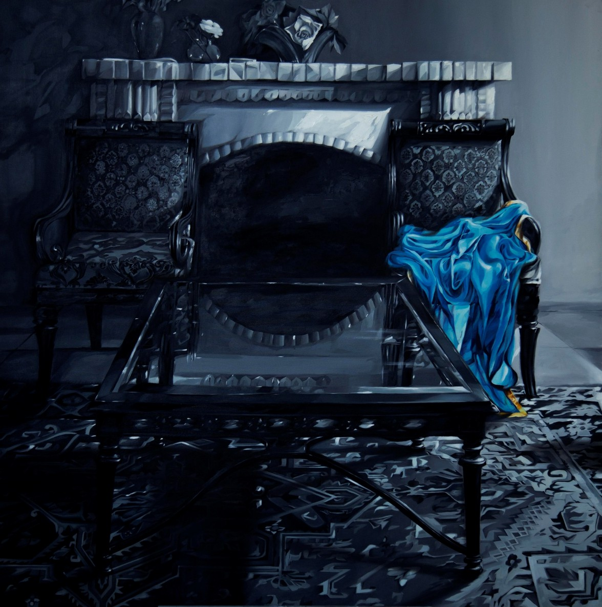
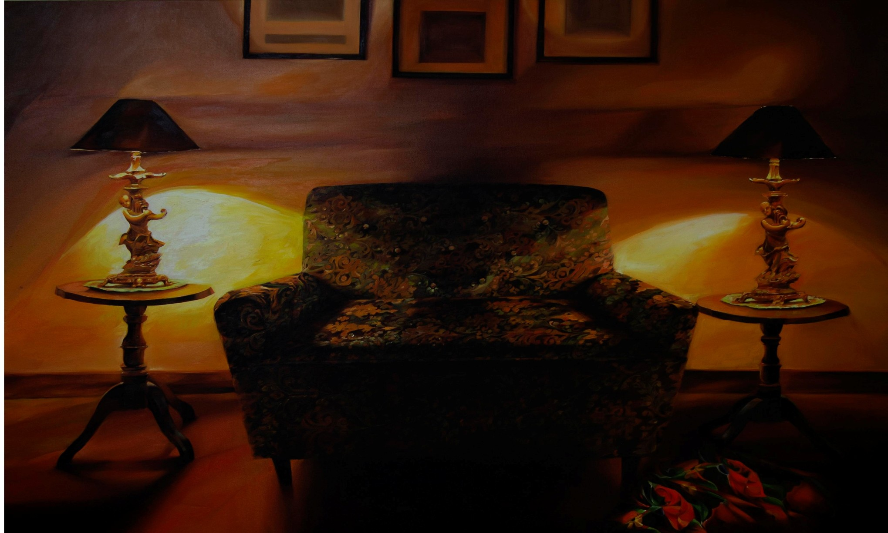

Can You Unsee
Oil on canvas · 36 × 60 inches

Featured ArtistIssue 02 · Artist Feature
Hina Malik’s paintings begin inside the home, yet their questions reach far beyond it. Through charged interiors, absent bodies and familiar objects, she examines how cultural expectations enter private life and shape a woman’s sense of self.
The Interior as Metaphor
Across Malik’s practice, the home becomes an emotional and cultural structure. Familiar rooms, furniture, cloth and shadow carry the weight of lived experience. These elements transform private interiors into spaces where female identity is formed, protected and contested. Saturated colour draws the viewer in, while compressed perspectives and areas of darkness create an underlying unease.

Love or Despair · Oil on canvas · 30 × 36 inches
About the Artist
For Malik, painting offers a way to study the quiet negotiations that take place between the individual and the culture surrounding her.
Born in Lahore in 1984, Hina Malik is a visual artist and educator whose research considers the complex relationship between the female body and cultural identity. She graduated from Lahore College for Women University in 2003 and completed an M.Phil. in Visual Arts with distinction from the College of Art and Design, University of the Punjab, in 2020, majoring in studio practice.
Malik is also pursuing a Master of Art Education at Beaconhouse National University. She currently serves as Assistant Professor and Head of the Fine Art Department at the Institute for Art and Culture in Lahore. Her work as an educator runs alongside her studio practice, placing research, observation and critical inquiry at the centre of both roles.
Her paintings are grounded in the details of domestic life. A chair placed near a doorway, fabric left on a bed, a partially visible room or the glow of a window may appear ordinary, but each element carries emotional pressure. The spaces seem inhabited even when no figure appears. Through this tension between presence and absence, Malik asks how identity survives inside structures shaped by family, tradition and gendered expectation.
The home can offer intimacy and protection while also becoming the place where a woman’s individuality is negotiated, compromised and continually remade.
Malik does not treat the interior as passive background. It acts as a witness to memory and a participant in the formation of the self. Rooms contain traces of routines, restrictions, care and emotional labour. By bringing these traces to the surface, she turns private experience into a wider reflection on the cultural position of women.
Curatorial Reading
Malik’s interiors operate as extensions of the body. Their thresholds, enclosures and openings suggest the boundaries placed around female experience.
The relationship between the body and architecture sits at the heart of Malik’s practice. Walls divide public identity from private feeling. Doors suggest access but also control. Beds and chairs hold the impression of bodies that may no longer be visible. In this way, architecture becomes psychological: each room reflects an inner state while carrying the social codes of the world outside it.
Her use of the absent figure is especially significant. Rather than describing womanhood through a fixed portrait, Malik allows objects and spaces to speak on behalf of the body. Clothing, bedding and domestic arrangements become indirect self-portraits. Absence creates room for the viewer to sense the person who has moved through the space and to consider why she remains concealed, displaced or only partially revealed.
The resulting works resist a single emotional reading. Warm colour can suggest comfort, memory and belonging, yet the same room may feel compressed or unsettled. Darkness can signify privacy and rest, but it can also point towards silence and erasure. Malik holds these contradictions together, refusing to reduce the home to either refuge or confinement.
Selected Works

Oil on canvas · 36 × 60 inches

Oil on canvas · 48 × 46 inches

Oil on canvas · 48 × 72 inches
Selected Work Analysis
Can You Unsee places the viewer before a domestic scene marked by concealment. The title turns looking into an ethical question: once an image, experience or truth enters consciousness, can it ever return to invisibility? The work’s enclosed setting and disrupted presence suggest memory that refuses to remain buried.
In Love or Despair, the bed becomes more than furniture. It carries the residue of intimacy, vulnerability and exhaustion. Deep shadow surrounds a vivid arrangement of cloth, creating uncertainty about whether the scene records care, conflict or emotional aftermath. Malik allows tenderness and unease to occupy the same image.
Should It Outshine My Silence considers the relationship between visibility and voice. The room is richly observed, yet its human presence remains indirect. This contrast raises a question central to Malik’s work: what happens when the objects around a woman become more visible than her own interior life?
Hide Me If You Can shifts between concealment and exposure. Its horizontal composition holds the body within a darkened room, while colour creates points of emotional intensity. The title carries resistance as well as vulnerability, suggesting a self that cannot be entirely contained by the space around it.
Malik’s saturated reds, oranges, blues and greens make the interiors feel immediate and alive. Colour often carries the emotion that the absent or obscured figure cannot state directly.
Furniture, textiles and architectural details retain evidence of touch and use. These objects become witnesses, preserving a human presence even when the body has withdrawn from view.
Windows, doors and narrow passages recur as psychological boundaries. They suggest movement and possibility while reminding the viewer that access may remain limited.
Silence in Malik’s work carries tension rather than emptiness. What remains unstated becomes visible through shadow, spatial pressure and the charged arrangement of ordinary things.
Selected Exhibition History
Her recent exhibition history reflects the continuing development of this research. The 2021 solo exhibition The Spell of Spaces foregrounded the interior as a central language in her practice. Later group presentations placed that investigation in conversation with broader discussions of tradition, transition, time and female experience.
Artist and Educator
Malik’s position as an artist and educator strengthens the research-driven character of her work.
Teaching and studio practice meet in her commitment to sustained questioning. Her paintings do not present cultural identity as settled or singular. Instead, they examine how it develops through repeated encounters with space, memory and social expectation.
This approach gives her domestic scenes their wider resonance. Although they emerge from personal and culturally specific experience, the works speak to a recognisable human tension: the desire to belong without disappearing inside the structures that offer belonging. Malik’s interiors hold this tension with sensitivity, allowing beauty and discomfort to remain visible at once.
Through painting, she makes private space available for public reflection. The result is a body of work that asks viewers to pay attention to what rooms remember, what objects conceal and how identity continues to assert itself even within silence.
Cosmopolitan Art Magazine Pakistan
Discover artists whose practices expand how we understand identity, material, memory and contemporary life.
Back to Featured Artists